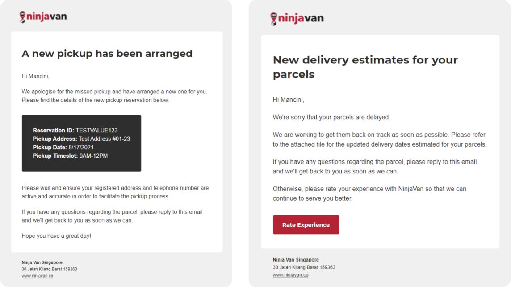

Service recovery at scale
When a parcel goes wrong, three teams get involved and the merchant usually hears nothing. I researched how that chain really worked across Southeast Asia, then designed a self-serve portal for merchants and the tools support agents use behind it.

Five handovers, three teams
A bit of information went missing at every handover.
Merchants raised an issue, support agents logged it, resolution teams investigated it, and the answer travelled back the same way. What merchants told us was interesting. The original problem was rarely the painful part. Not knowing whether anyone was working on it was. And once a case was closed, there was no way to disagree without raising a new one and explaining everything again.
- MerchantContacts Ninja Van→
- Support agentLogs the issue in the CRM→
- Resolution teamReceives the escalation→
- Resolution teamInvestigates and relays back→
- Support agentUpdates the merchant
Talking to all three groups first
Different issues fail in different ways, so one group's view was never going to be enough.
I ran remote interviews with each group across Southeast Asia, alongside a usability survey for support agents and a Customer Effort Score survey for merchants. For merchants, I spoke to people who'd raised an issue in the past month and scored us both well and badly. Then I weighed how often each theme came up against case volumes and response times, to decide what to fix first.
Issues live where orders live
The place you book a pickup is now the place you chase it.
Raising an issue used to mean hunting the website for a phone number, then wondering if it had landed. So I built service recovery into the parcel portal merchants already used. The form collects order IDs, issue type and proof of value in the same order agents already filled them in on their side, which saved everyone a lot of re-typing. Delayed pickups and deliveries now open cases automatically.

A bad score reopens the case
The survey stopped being just a measurement and became a way back in.
Customer Effort Score surveys used to go out by cold call and email. Tedious for everyone, and hardly anyone replied. So the survey moved into the portal, next to the case it's about, and into new email templates written per issue type. A low score now reopens the conversation and offers other ways to resolve it.
Generic text-only mail, no way to reply with a score.
In the portal and in every email, one tap to rate.
Merchants get a say in the outcome, without starting over.

Support agents worked in a Salesforce-based CRM, and I also designed the screens they used to log and manage cases. Service recovery only works when both sides are looked after.
Also at Ninja Van: Akira
The case for a design system, in numbers.
Akira was Ninja Van's design system initiative. I worked on the documentation and on getting content standards into the component library itself, which is the least glamorous route to consistency and the one that holds.
Shift plans that stick
Neuron Mobility · Micromobility